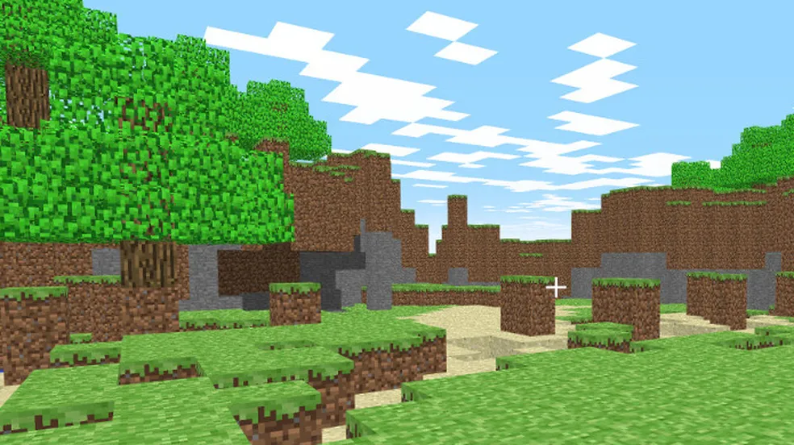

A primeira vez que Minecraft surgiu na internet foi em 2009 como projeto online do programador sueco Markus "Notch" Persson — hoje conhecida como versão "Classic". O usuário podia mexer nos blocos, mas ainda não havia os elementos de sobrevivência que tornariam a série tão popular. O jogo ficava disponível de graça, mas era possível comprar essa versão do game em um modelo inédito, no qual investia-se no jogo incompleto para continuar recebendo as atualizações futuras sem pagamentos extras. Foi o nascimento do modelo "Early Access" ou "Acesso Antecipado".
